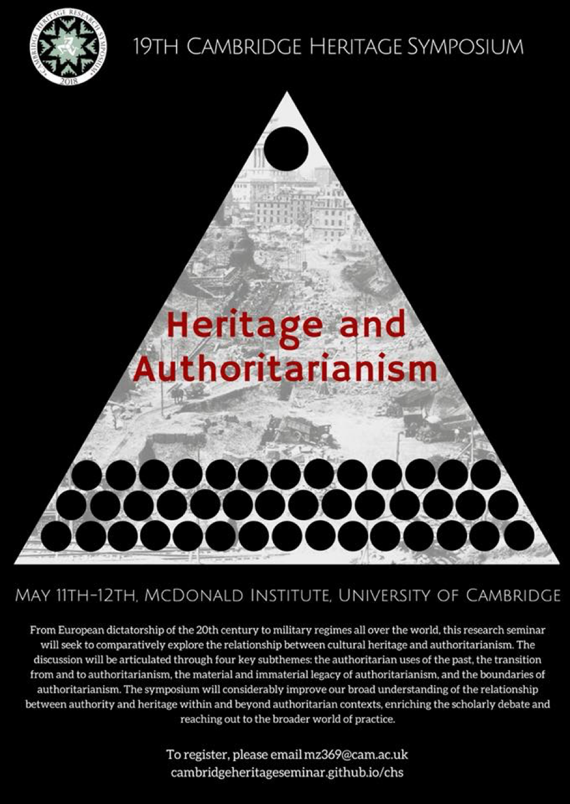

Annual Cambridge Heritage Research Symposium
The Cambridge Heritage Research Group has hosted the annual Cambridge Heritage Symposium (CHS) for ten years. The CHS series have brought together researchers, policymakers and practitioners to explore the most pressing issues in heritage studies today.
2018: Heritage and authoritarianism
19th Annual Cambridge Heritage Research Symposium
11-12 May, 2018
In the last decade, critical heritage studies have highlighted the importance of authority in different historical and social realities. Heritage theories, however, have been chiefly formulated from the standpoint of Western democracies. While authority is a relative property, common to all state (and non-state) societies, the extremes of authoritarian political regimes have always exerted a special influence on cultural heritage. Despite being articulated in very diverse ways in the different contexts in which it takes place, this influence has produced remarkable similarities through space and time.
From European dictatorships of the 20th century to military regimes all over the world, this research seminar will seek to comparatively explore the relationship between cultural heritage and authoritarianism. The discussion will be articulated through four key subthemes:
- The authoritarian uses of the past. How are material remains (including archaeological data) mobilised by regimes? What are the outcomes of these processes?
- The transition from and to authoritarianism. What is the impact of transitional periods in determining heritage destruction, reinterpretation and memory work connected to the regime?
- The material and immaterial legacy of authoritarianism. What is the role of (past) authoritarian experience in contemporary society? Is it always framed as a taboo or does it continue to loom large and trigger inflammatory debates?
- The boundaries of authoritarianism. What are the differences between what can be conceptualised as heritage of authoritarianism and discourses typical of current (representative) democracies? Is this difference qualitative?
Through the exploration of these aspects, this seminar will considerably improve our broad understanding of the relationship between authority and heritage within and beyond authoritarian contexts, enriching the scholarly debate and reaching out to the broader world of practice.
About us
The annual Cambridge Heritage Research Symposium (CHS) was set up twenty years ago as a forum for discussing and sharing ideas, questions, and case studies arising from working with or studying heritage. In short we wanted to provide an opportunity for talking and thinking together around topical issues within the wide framework of heritage studies.
We soon learned that there were additional benefits. Chief among these are the new networks that emerged around each gathering; the opportunity of gaining glimpses into how heritage is debated within diverse fields has been immensely valuable to us as a research community. Another outcome has been the continuous challenge to our own perceptions of heritage studies are (or what they could be), and reflections on the position of this area within both academia and professional practice.
The conferences have been instrumental to recognizing the varied forms of heritage, the wide-ranging interest in the field, and the many ways heritage is being studied and practiced – confirming the centrality of this field and the many areas it contributes to.
Past conferences


CHS18 (2017) - Heritage and Revolution
CHS17 (2016) - Heritage of Displacement
CHS16 (2015) – African Heritage Challenges | proceedings
CHS15 (2014) – 1914 Inherited
CHS14 (2013) – Heritagescapes
CHS13 (2012) – Heritage Studies: Stories in the Making
CHS12 (2011) – The Heritage of Memorials and Commemorations | report
CHS11 (2010) – Heritage and the Olympics
CHS10 (2009) – The Future of Historic Cities | proceedings | report
CHS 9 (2008) – Packaging the Past | report
CHS 8 (2007) – Revisioning the Nation
CHS 7 (2006) – Intangible-Tangible Cultural Heritage| report
2014 Mediterranean Symposium | Images